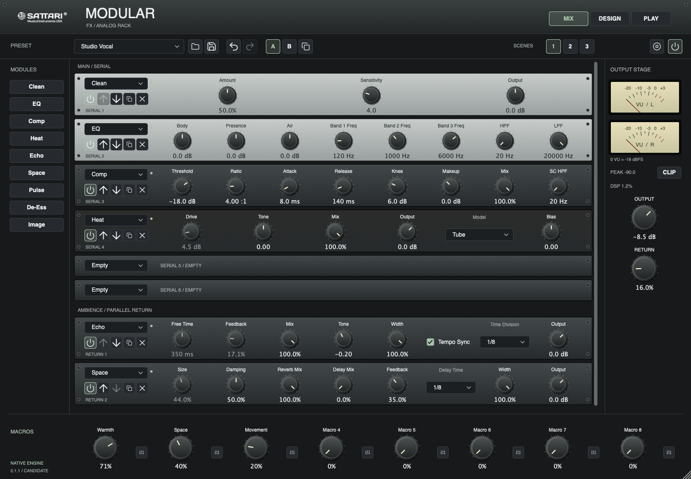
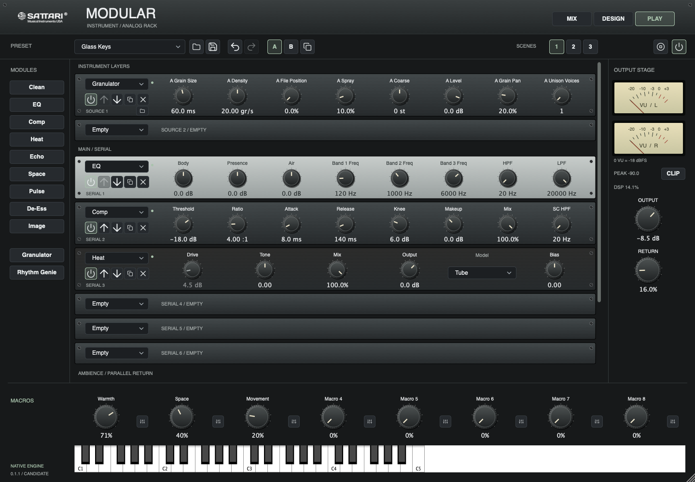

Find your order.
Load, duplicate, bypass and reorder integrated Sattari effects. Each instance keeps its own controls and processing history.
FX + Instrument / 0.1.1 release candidate
Your sound. Your chain. One studio rack.
Sattari effects and instruments, brought together in an analog-inspired rack.

9Sattari effects
2Instrument layers
8Assignable macros
3Recallable scenes
One rack, two starting points
Shape incoming audio with Modular FX, or start with two MIDI-driven source layers in Modular Instrument. Both feed the same effects rack.
Nine effects. Six serial slots. A two-slot parallel return.
Layer Granulator and Rhythm Genie, then shape them through your chain.

Load, duplicate, bypass and reorder integrated Sattari effects. Each instance keeps its own controls and processing history.
Map two targets to each of eight macros, with adjustable ranges. Compare A/B settings and recall three rack scenes.
Save your chain as a preset or with your DAW session. Imported source audio travels inside the saved state.
Inside Modular
Integrated Sattari modules, ready to build into your chain.
Audio cleanup
Frequency shaping
Dynamics control
Drive and saturation
Tempo-synced delay
Reverb and ambience
Rhythmic movement
Sibilance control
Stereo shaping
Play the built-in source, import WAV, AIFF or FLAC audio into Granulator, or trigger Rhythm Genie from MIDI. Two layers feed your shared effects chain.
Modular uses built-in Sattari modules. It does not load third-party plugin files or include every product in the Sattari suite.
From the native engine
A short instrument render from the 0.1.1 candidate.
5 seconds / stereo WAV / native engine render
Version 0.1.1
Modular is a working native release candidate. Public downloads are not open.
Universal Apple silicon + Intel builds
AU / VST3 / Standalone
FX and Instrument builds are Developer ID signed. Automated AU and VST3 validation has passed on Apple silicon and under Rosetta.
Apple notarization, physical Intel testing and broader DAW qualification remain pending.
Windows x64 build pipeline prepared
Planned: VST3 / Standalone
A native Windows build has not yet been qualified. No Windows installer or download is available.
Availability will follow native testing and supported-host qualification.
Clean-machine installation, extended DAW sessions, listening approval and distribution licensing review are still part of the release process. There is no announced release date.
Not in this version. Modular loads its integrated Sattari effects and sources, not external plugin binaries. It is a fixed serial rack with a post-rack parallel return, not an arbitrary patch-cable host.
The rack, control settings, macro assignments and imported source samples are stored in Modular presets and host state. Each source layer supports up to 1,440,000 audio frames, or 30 seconds at 48 kHz. Scenes and A/B compare settings; they do not hold separate samples.
No. Modular is a hands-on effects and instrument rack. Automatic mixing is not part of this version.